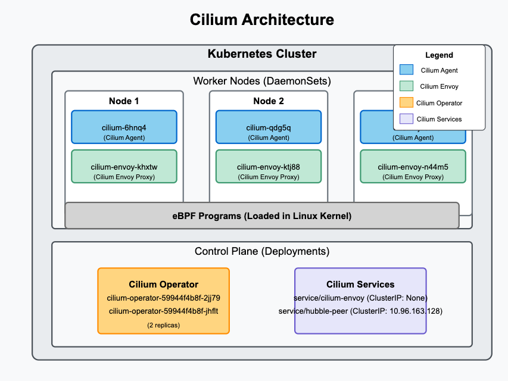
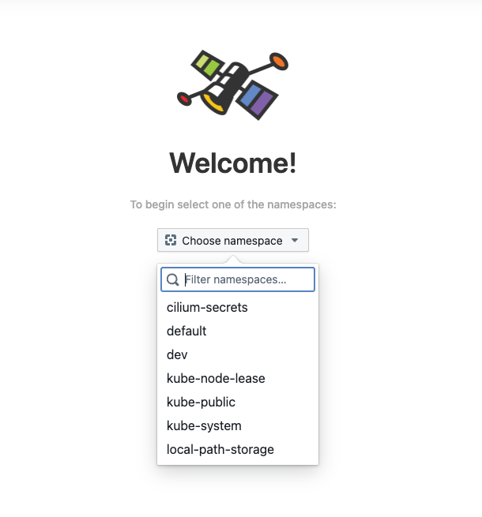

Lab 3 - Install Cilium with KIND
In this lab, you will reconfigure the KIND Cluster, this time with Cilium. You will redo the cluster, this time with disabled Kindnet CNI and setup Cilium along with Hubble, the observability layer.
To start redoing the cluster, switch to the path from where you setup the KIND environment. and delete the exissting cluster.
# Switch to kind config path
cd /root/k8s-code/helper/kind
kind delete cluster --name kind
Edit kind-three-node-cluster.yaml with the following changes
# three node (two workers) cluster config
kind: Cluster
apiVersion: kind.x-k8s.io/v1alpha4
networking:
disableDefaultCNI: true
Create KIND Cluster
kind create cluster --config kind-three-node-cluster.yaml
[Sample Output ]
Creating cluster "kind" ...
✓ Ensuring node image (kindest/node:v1.32.2) 🖼
✓ Preparing nodes 📦 📦 📦
✓ Writing configuration 📜
✓ Starting control-plane 🕹️
✓ Installing StorageClass 💾
✓ Joining worker nodes 🚜
Set kubectl context to "kind-kind"
You can now use your cluster with:
kubectl cluster-info --context kind-kind
Not sure what to do next? 😅 Check out https://kind.sigs.k8s.io/docs/user/quick-start/
Validate
kubectl cluster-info --context kind-kind
kubectl get nodes
[Sample output]
# kubectl get nodes
NAME STATUS ROLES AGE VERSION
kind-control-plane NotReady control-plane 100s v1.32.2
kind-worker NotReady <none> 89s v1.32.2
kind-worker2 NotReady <none> 89s v1.32.2
Check pods
kubectl get pod -A
# kubectl get pods -A
NAMESPACE NAME READY STATUS RESTARTS AGE
kube-system coredns-668d6bf9bc-l6mdb 0/1 Pending 0 116s
kube-system coredns-668d6bf9bc-p4fmn 0/1 Pending 0 116s
kube-system etcd-kind-control-plane 1/1 Running 0 2m4s
kube-system kube-apiserver-kind-control-plane 1/1 Running 0 2m2s
kube-system kube-controller-manager-kind-control-plane 1/1 Running 0 2m4s
kube-system kube-proxy-5tsh8 1/1 Running 0 114s
kube-system kube-proxy-78jnh 1/1 Running 0 114s
kube-system kube-proxy-tzhz2 1/1 Running 0 116s
kube-system kube-scheduler-kind-control-plane 1/1 Running 0 2m2s
local-path-storage local-path-provisioner-7dc846544d-cstmf 0/1 Pending 0 116s
You shall see some pods e.g. coredns, storage provisionere in pending state. This is because there is no pod networking setup yet. Lets do that with Cilium.
Setup CNI with Cilium
You will setup cilium using helm. Install it if its not already available.
curl https://raw.githubusercontent.com/helm/helm/main/scripts/get-helm-3 | bash
Setup cilium helm repo
helm repo add cilium https://helm.cilium.io/
Setup cilium as
helm install cilium cilium/cilium --version 1.17.2 \
--namespace kube-system \
--set image.pullPolicy=IfNotPresent \
--set ipam.mode=kubernetes
validate
helm list -A
kubectl get all -n kube-system -l "app.kubernetes.io/part-of=cilium"
[sample output]
NAME READY STATUS RESTARTS AGE
pod/cilium-6hnq4 1/1 Running 0 97s
pod/cilium-envoy-khxtw 1/1 Running 0 97s
pod/cilium-envoy-ktj88 1/1 Running 0 97s
pod/cilium-envoy-n44m5 1/1 Running 0 97s
pod/cilium-operator-59944f4b8f-2jj79 1/1 Running 0 97s
pod/cilium-operator-59944f4b8f-jhflt 1/1 Running 0 96s
pod/cilium-qdg5q 0/1 Running 0 96s
pod/cilium-tj2bh 1/1 Running 0 96s
NAME TYPE CLUSTER-IP EXTERNAL-IP PORT(S) AGE
service/cilium-envoy ClusterIP None <none> 9964/TCP 97s
service/hubble-peer ClusterIP 10.96.163.128 <none> 443/TCP 97s
NAME DESIRED CURRENT READY UP-TO-DATE AVAILABLE NODE SELECTOR AGE
daemonset.apps/cilium 3 3 2 3 2 kubernetes.io/os=linux 97s
daemonset.apps/cilium-envoy 3 3 3 3 3 kubernetes.io/os=linux 97s
NAME READY UP-TO-DATE AVAILABLE AGE
deployment.apps/cilium-operator 2/2 2 2 97s
NAME DESIRED CURRENT READY AGE
replicaset.apps/cilium-operator-59944f4b8f 2 2 2 97s
Understanding the Components
1 Pods:
* cilium-xxxxx: These are Cilium agent pods running as DaemonSet. They enforce network policies and provide observability.
* cilium-envoy-xxxxx: These are Envoy proxy pods deployed as DaemonSet, used for L7 policies and load balancing.
* cilium-operator-xxxxx: These are Cilium operator pods deployed as a Deployment. They manage network policies, IPAM (IP address management), and other Kubernetes interactions.
2 Services:
* cilium-envoy: A ClusterIP service used for managing Envoy instances.
* hubble-peer: A ClusterIP service facilitating Hubble, Cilium’s network observability tool.
3 DaemonSets:
* cilium: Ensures that the Cilium agent runs on every node.
* cilium-envoy: Ensures that an Envoy proxy instance runs on each node.
4 Deployment & ReplicaSet:
* cilium-operator: Runs in HA mode with two replicas, responsible for managing IPAM, policies, and interactions with Kubernetes.
* cilium-operator-59944f4b8f: The associated ReplicaSet ensuring the operator maintains the desired state.

Smoke Test Cilium
Install Cilium CLI
CILIUM_CLI_VERSION=$(curl -s https://raw.githubusercontent.com/cilium/cilium-cli/main/stable.txt)
CLI_ARCH=amd64
if [ "$(uname -m)" = "aarch64" ]; then CLI_ARCH=arm64; fi
curl -L --fail --remote-name-all https://github.com/cilium/cilium-cli/releases/download/${CILIUM_CLI_VERSION}/cilium-linux-${CLI_ARCH}.tar.gz{,.sha256sum}
sha256sum --check cilium-linux-${CLI_ARCH}.tar.gz.sha256sum
sudo tar xzvfC cilium-linux-${CLI_ARCH}.tar.gz /usr/local/bin
rm cilium-linux-${CLI_ARCH}.tar.gz{,.sha256sum}
To check cilium installation readiness
cilium status --wait
[sample output ]
/¯¯\
/¯¯\__/¯¯\ Cilium: OK
\__/¯¯\__/ Operator: OK
/¯¯\__/¯¯\ Envoy DaemonSet: OK
\__/¯¯\__/ Hubble Relay: disabled
\__/ ClusterMesh: disabled
DaemonSet cilium Desired: 3, Ready: 3/3, Available: 3/3
DaemonSet cilium-envoy Desired: 3, Ready: 3/3, Available: 3/3
Deployment cilium-operator Desired: 2, Ready: 2/2, Available: 2/2
Containers: cilium Running: 3
cilium-envoy Running: 3
cilium-operator Running: 2
clustermesh-apiserver
hubble-relay
Cluster Pods: 3/3 managed by Cilium
Helm chart version: 1.17.2
Image versions cilium quay.io/cilium/cilium:v1.17.2@sha256:3c4c9932b5d8368619cb922a497ff2ebc8def5f41c18e410bcc84025fcd385b1: 3
cilium-envoy quay.io/cilium/cilium-envoy:v1.31.5-1741765102-efed3defcc70ab5b263a0fc44c93d316b846a211@sha256:377c78c13d2731f3720f931721ee309159e782d882251709cb0fac3b42c03f4b: 3
cilium-operator quay.io/cilium/operator-generic:v1.17.2@sha256:81f2d7198366e8dec2903a3a8361e4c68d47d19c68a0d42f0b7b6e3f0523f249: 2
Enable Observability with Hubble
cilium hubble enable
cilium hubble enable --ui
validate
# run this after a minute or so (give it some time to setup)
cilium status
kubectl get pods -n kube-system
[sample output]
/¯¯\
/¯¯\__/¯¯\ Cilium: OK
\__/¯¯\__/ Operator: OK
/¯¯\__/¯¯\ Envoy DaemonSet: OK
\__/¯¯\__/ Hubble Relay: OK
\__/ ClusterMesh: disabled
DaemonSet cilium Desired: 3, Ready: 3/3, Available: 3/3
DaemonSet cilium-envoy Desired: 3, Ready: 3/3, Available: 3/3
Deployment cilium-operator Desired: 2, Ready: 2/2, Available: 2/2
Deployment hubble-relay Desired: 1, Ready: 1/1, Available: 1/1
Deployment hubble-ui Desired: 1, Ready: 1/1, Available: 1/1
Containers: cilium Running: 3
cilium-envoy Running: 3
cilium-operator Running: 2
clustermesh-apiserver
hubble-relay Running: 1
hubble-ui Running: 1
Cluster Pods: 11/11 managed by Cilium
Helm chart version: 1.17.2
Image versions cilium quay.io/cilium/cilium:v1.17.2@sha256:3c4c9932b5d8368619cb922a497ff2ebc8def5f41c18e410bcc84025fcd385b1: 3
cilium-envoy quay.io/cilium/cilium-envoy:v1.31.5-1741765102-efed3defcc70ab5b263a0fc44c93d316b846a211@sha256:377c78c13d2731f3720f931721ee309159e782d882251709cb0fac3b42c03f4b: 3
cilium-operator quay.io/cilium/operator-generic:v1.17.2@sha256:81f2d7198366e8dec2903a3a8361e4c68d47d19c68a0d42f0b7b6e3f0523f249: 2
hubble-relay quay.io/cilium/hubble-relay:v1.17.2@sha256:42a8db5c256c516cacb5b8937c321b2373ad7a6b0a1e5a5120d5028433d586cc: 1
hubble-ui quay.io/cilium/hubble-ui-backend:v0.13.2@sha256:a034b7e98e6ea796ed26df8f4e71f83fc16465a19d166eff67a03b822c0bfa15: 1
hubble-ui quay.io/cilium/hubble-ui:v0.13.2@sha256:9e37c1296b802830834cc87342a9182ccbb71ffebb711971e849221bd9d59392: 1
Expose hubble service and make it available on 30200 nodeport as,
kubectl patch svc hubble-ui -n kube-system --type='json' -p '[{"op":"replace","path":"/spec/type","value":"NodePort"},{"op":"replace","path":"/spec/ports/0/nodePort","value":30200}]'
kubectl get svc -n kube-system
[sample output ]
NAME TYPE CLUSTER-IP EXTERNAL-IP PORT(S) AGE
cilium-envoy ClusterIP None <none> 9964/TCP 4h24m
hubble-peer ClusterIP 10.96.163.128 <none> 443/TCP 4h24m
hubble-relay ClusterIP 10.96.48.239 <none> 80/TCP 6m12s
hubble-ui NodePort 10.96.200.6 <none> 80:30200/TCP 4m54s
kube-dns ClusterIP 10.96.0.10 <none> 53/UDP,53/TCP,9153/TCP 4h29m
To find out your ip use
curl ifconfig.me
Now you should be able to access hubble UI using http://IPADDRESS:30200

Thats it, you now have a working cilium cluster with observability enabled.